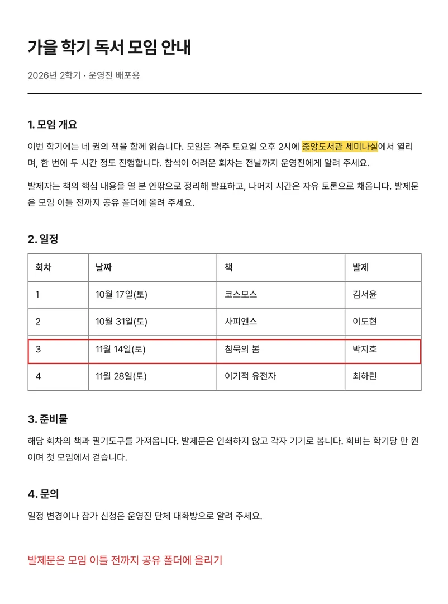

PDF에 바로 쓰고, 표시하고, 정리합니다
글자 넣기와 형광펜, 도형, 도장, 쪽 편집을 한 창에서 합니다. 문서는 내 기기 안에서만 처리되고 원본은 그대로 남습니다.

기능
글자 넣기
타자기, 텍스트 상자, 설명선으로 원하는 자리에 글을 씁니다. 글꼴과 크기, 색을 고를 수 있습니다.
강조
형광펜, 밑줄, 취소선을 글자에 맞춰 긋고, 글자가 없는 곳은 영역으로 칠합니다.
그리기와 도장
선, 화살표, 사각형, 원, 펜으로 그리고 지우개로 획을 지웁니다. 별표 도장과 직접 등록한 도장을 찍습니다.
쪽 편집
쪽 순서 바꾸기, 복제, 삽입, 회전, 삭제를 미리 보면서 합니다.
AI 연결
Windows용은 Claude 같은 AI 도우미에 연결해, AI가 PDF를 읽고 주석을 넣게 할 수 있습니다. 자세히
안전한 저장
항상 다른 이름으로 저장하므로 원본을 덮어쓰지 않습니다. 저장한 파일은 다른 PDF 프로그램에서도 그대로 보입니다.
AI 연결
Windows용에는 AI 도우미가 쓰는 프로그램(PDFEditorCLI.exe)이 함께 설치됩니다. Claude Desktop이나 Claude Code에 한 번 연결해 두면, 말로 시킨 대로 AI가 PC의 PDF를 읽고 표시해서 새 파일로 저장합니다.
“독서 모임 안내.pdf에서 장소를 형광펜으로 칠하고, 11월 14일 줄에 빨간 네모를 치고, 맨 아래에 ‘발제문은 모임 이틀 전까지 공유 폴더에 올리기’라고 적어 줘.”
AI가 할 수 있는 일
- 문서의 글자를 읽고, 원하는 문구가 어디 있는지 찾습니다.
- 형광펜·밑줄·취소선을 긋고, 메모와 텍스트 상자, 설명선을 넣습니다.
- 선·화살표·사각형·원을 그리고 도장을 찍습니다.
- 쪽을 돌리고, 지우고, 순서를 바꾸고, 다른 PDF의 쪽을 끼워 넣습니다.
- 결과 쪽을 그림으로 다시 보고 스스로 확인합니다.
연결하기
- PDF 편집기 1.1.0 이상을 설치합니다.
- 명령 프롬프트에서 아래 한 줄을 실행합니다.
"%LOCALAPPDATA%\Programs\PDFEditor\PDFEditorCLI.exe" connect claude-desktop - Claude Desktop을 완전히 종료한 뒤 다시 실행합니다.
강의 필기에 쓰려면 필기 방법 파일을 받아 AI에게 주면 됩니다.

내려받기
| 파일 | 크기 | SHA-256 |
|---|---|---|
| Windows 설치판 | 35.1MB | 91b471ddc0d766485488cad879d7f2e903cda572e2ddcaa509bdf8bbc2dcaf9d |
| Windows 휴대용 | 51.2MB | f80272e6ced366954c17a304f16969cc399b9223edb7f9e4ba756146fa8a2be8 |
| Android | 46.0MB | 0eda436a19fc97909d5f66caf0971450739c3e47d170370e9b8986ce19f011b7 |
- 설치판은 관리자 권한 없이 현재 사용자 계정에 설치됩니다. 기본 PDF 프로그램은 바꾸지 않습니다.
- 휴대용은 압축을 모두 푼 뒤 PDFEditor.exe를 실행합니다.
- 처음 실행할 때 Windows 보호 화면이 나오면 ‘추가 정보’를 누른 뒤 ‘실행’을 선택합니다.
- Android용은 Android 7.0 이상 64비트 기기에서 동작합니다. 내려받은 파일을 열고, 안내가 나오면 이 출처의 앱 설치를 허용합니다.
- Microsoft Edge WebView2 런타임이 필요합니다. Windows 11과 최신 Windows 10에는 이미 들어 있습니다.